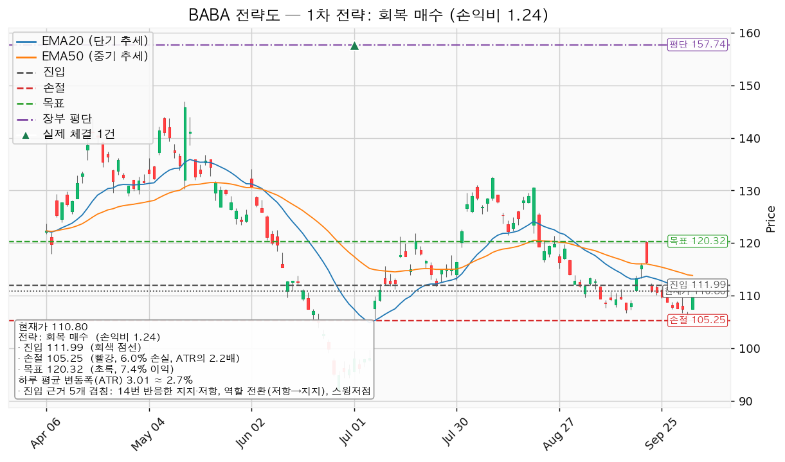
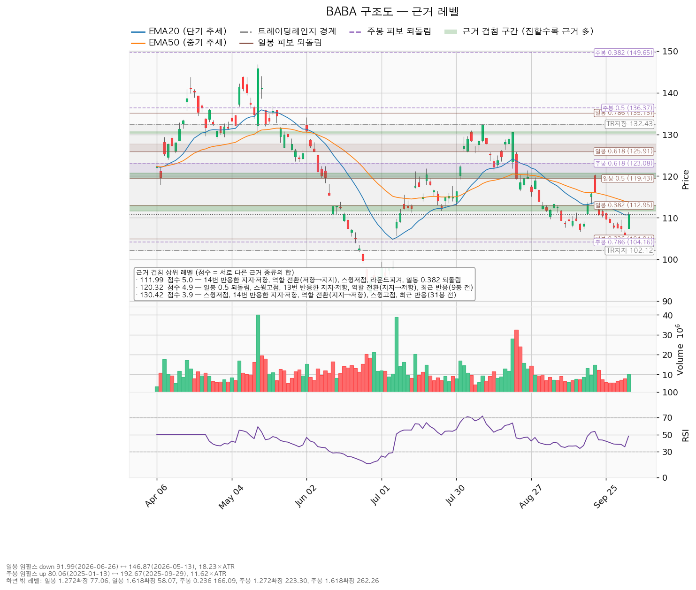
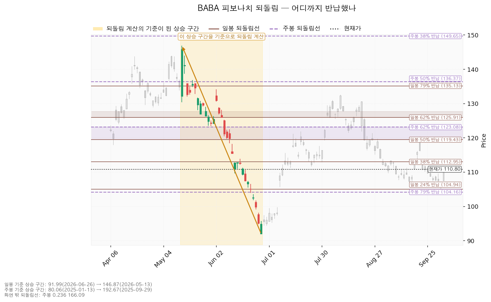
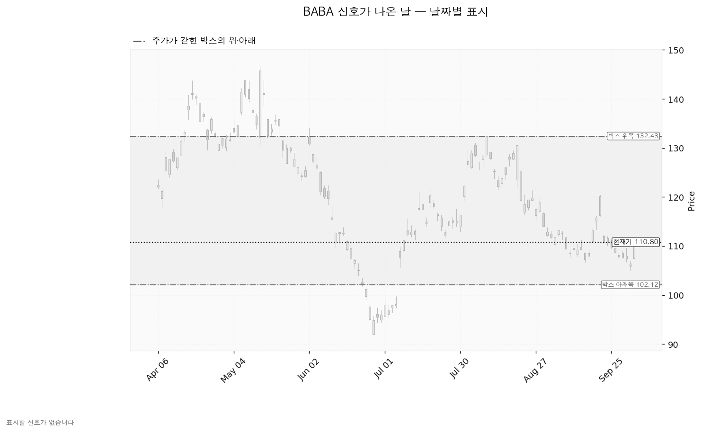

알리바바(BABA)는 중국의 전자상거래 플랫폼(타오바오·티몰·알리익스프레스)과 클라우드 컴퓨팅, 물류·디지털 결제 사업을 운영하는 기업이며, 미국 증시에는 주식예탁증서(ADR)로 상장돼 있습니다.
10월 5일 종가 110.80달러(+4.68%), ATR 3.01달러(주가의 2.72%) 기준입니다.
| 구분 | 가격 | 판정 방식 | 현재가 대비 | 상태 |
|---|---|---|---|---|
| 회복선(진입 조건) | 112달러 | 일봉 종가로 회복한 뒤 되돌림에서 지지되는지 | +1.07% (0.40배) | 회복 대기 |
| 집행 손절 | 105달러 | 저가 터치 시 전량 매도 — 신규분은 진입한 경우에만 유효, 보유 8주에는 지금도 유효 | -5.01% (1.84배) | 대기 |
| 관망 종료 기준 | 106달러 | 일봉 종가 이탈 / 또는 2026-11-24 실적 | -4.33% (1.59배) | 유효 |
| 확인선 | 120달러 | 일봉 종가 돌파 후 되돌림 지지 확인 | +8.59% (3.16배) | 미돌파 |
| 폐기선(구조) | 102달러 | 이탈 후 3거래일 내 종가 회복 실패(또는 그 전에 99달러 아래 종가) + 반등에서 저항 확인 | -7.83% (2.88배) | 유지 중 |
| 항목 | 내용 |
|---|---|
| 셋업 | 저항 회복 매수 — 회복 확인형(종가 회복 뒤 진입) |
| 진입 / 손절 / 목표 | 112달러 / 105달러 / 120달러에서 전량 매도 (목표 도달) |
| 손익비 | 1:1.24 (손절 폭 2.24 ATR = 진입가의 6.02%) |
| 진입 근거 | 5개 겹침 — 14번 반응한 지지·저항, 역할 전환(저항→지지), 스윙저점, 라운드피겨, 일봉 0.382 되돌림. 띠 111.66~112.95달러 |
| 손절 근거 | 106.00~106.64달러 구간(라운드피겨·9/16 스윙저점·13봉 전 반응) 바로 아래로 밀어낸 값 |
| 엣지 | 모멘텀 — 저항을 종가로 되찾으면 그 방향이 이어진다는 전제. 자주 틀리고 소수가 크게 맞는 유형(일반적 성격이며 측정값 아님) |
산출된 셋업은 이것 하나이고, 손익비 1.24 × 회복 확인형 × 진입 근거 5개 겹침으로 대표가 됐습니다. 상대강도·거래량 배수 0.871배(지수 대비 20일 초과수익 -2.87%, 상대강도선 20일 기울기 -2.85%, 거래량 최대 1.21배)가 곱해졌지만 순서를 바꿀 다른 셋업이 없습니다. 진입~목표가 2.77 ATR이지만 집행 정책상 단일 청산이며, 113.91달러에서 절반 나누면 전 구간 손익비가 1:1.24에서 1:0.77로, 잔여분이 본전 손절로 끝나면 1:0.14로 내려갑니다. 확인선 120달러가 목표와 같으므로 막히고 되밀리면 120달러에서 전량 매도 (목표 도달)로 끝내고, 일봉 종가로 넘으면 새 셋업으로 다시 잡습니다. 진입가 112달러는 평단 157.736달러 아래라 진입하면 평단을 낮추는 매수입니다.
현재가 추격 비권장입니다 — 종가 회복 확인 전입니다. 대기 좌표로는 106.00~106.64달러 구간이 나오지만 이 구간에서 산출된 매수 셋업은 없어 매수 자리로 쓰지 않습니다. 현재가가 5봉 유지되면 20일선은 110.67→110.72달러, 50일선은 113.82→113.28달러로 움직이며, 이는 가격 예측이 아닙니다.

| 단계 | 트리거 | 의미 | 행동 |
|---|---|---|---|
| ① 관찰 | 일봉 종가가 112달러 아래로 마감 | 구조 이탈 시작 — 되돌아오면 속임수 하락일 수 있어 무효 아님 | 신규 진입만 중단, 집행 손절 유지 |
| ② 경고 | 이탈 후 3거래일 안에 112달러를 종가로 회복하지 못함, 또는 그 전에 일봉 종가가 109달러 아래로 마감(하루 평균 변동폭 1배만큼 더 밀림) — 둘 중 먼저 오는 쪽 | 회복 실패 가능성이 우세 | 잔여 비중 축소, 반등 시 112달러 반응 확인 |
| ③ 무효 | 반등이 112달러에서 막히고 되밀림(지지가 저항으로 전환) | 셋업 폐기 | 신규 진입분 전량 매도 (셋업 폐기) 후 관망 |
집행 손절 105달러는 이 판정과 무관하게 저가 터치로 작동합니다. 셋업 무효화선 112달러와 시나리오 폐기선 102달러는 다른 가격입니다.
① 상승 전환 — 112달러 종가 회복 후 지지, 이어 120달러 종가 돌파. 112달러 회복·지지 후 진입하고, 120달러 돌파 시 새 셋업으로 재산출합니다.
② 횡보 지속 — 102달러를 지키며 120달러 아래 박스 유지. 매물 소화에 시간이 필요한 국면입니다. 신규 진입은 보류하고 지지 테스트 거래량(6/26 1.45배 → 9/16 0.61배 → 10/2 0.97배, 추세 판정 감소), 저점 절상(현재 절상), 상승봉/하락봉 거래량비(현재 1.15배)를 추적합니다.
③ 시나리오 폐기 — 102달러 이탈 후 3거래일 내 회복 실패(또는 그 전에 99달러 아래 종가) + 반등에서 저항 확인. 박스는 재분산이었던 것이며, 102달러 종가 이탈이 확정되면 보유 8주 전량 매도 (시나리오 폐기) 후 새 박스가 생길 때까지 관망합니다.
751일치 일봉 중 90봉 창으로 판정했습니다(40봉은 박스 안 체류 42.5%로 추세가 흘렀고, 180봉은 폭이 ATR의 24.77배로 넓었습니다). 박스는 102~132달러, 직전 구간은 122.55~176.70달러 추세·확장 구간이며 가격은 위에서 내려왔습니다.
| 가격대 | 겹치는 것 |
|---|---|
| 119.43~120.73달러 | 13번 반응한 지지·저항(지지→저항 전환), 스윙고점, 일봉 0.5 되돌림, 최근 반응(9봉 전) |
| 111.66~112.95달러 | 14번 반응한 지지·저항(저항→지지 전환), 스윙저점, 라운드피겨, 일봉 0.382 되돌림 |
| 106.00~106.64달러 | 라운드피겨, 스윙저점, 최근 반응(13봉 전) |
| 104.16~104.94달러 | 주봉 0.786·일봉 0.236 되돌림 |
위에서 내려온 박스라 매집과 재분산의 갈림길이며, 안쪽 근거(테스트 거래량 감소·저점 절상·상승봉 거래량 1.15배)로 매집 우위·국면 후보 매집으로 판정됐습니다.

일봉 되돌림은 2026-05-13 146.87달러 → 06-26 91.99달러 하락 기준이며 현재가는 0.236(104.94)과 0.382(112.95) 사이입니다. 주봉은 2025-01-13 80.06달러 → 2025-09-29 192.67달러 상승 기준이고 0.786(104.16) 위에 있습니다.

날짜별 신호(속임수 하락·강세 신호 등)는 이번 판정 구간에서 산출되지 않아 아래 차트에 표시된 신호일이 없습니다.

(a) 후행 26.8배 / 선행 12.0배로 두 배 넘게 벌어져 있으며, 올해 이익 +64.4%·내년 +40.4% 증가 추정 때문입니다. (b) 39명 평균 185.77달러(+67.7%), 최저 95.45달러(-13.9%), 최고 238.84달러(+115.6%), 적극 매수 — 현재가는 최저 목표 위입니다. (c) 52주 고점 대비 -42.01%인데 내년 추정이익은 90일 +0.8%, 최근 30일 -1.3%(올해 -0.4% / -1.0%)로 제자리라 하락은 배수 수축이며 상향은 진행 중이 아닙니다. 재평가 계기를 추정치에서 찾지 못해 기다릴 근거를 못 찾았으므로 수 주 대기의 근거는 약합니다. (d) 2026-03-31 결산 기준 영업현금흐름 +762.1억, 설비투자 1,269.4억(+47.6%), 잉여현금흐름 -507.2억(통화 단위 미반환) — 영업 흑자에 설비투자가 앞선 적자입니다. (e) 평균 목표 ÷ 선행 EPS 9.23달러 = 내재 20.1배로, 현재 12.0배에서 상승분 대부분이 배수 확장에서 옵니다. 컨센서스는 12개월, 셋업은 수 주 시계입니다.
| 날짜 | 이벤트 | 볼 것 |
|---|---|---|
| 2026-11-24 | 분기 실적 | 클라우드 매출 증가율, 영업현금흐름 흑자 유지, 설비투자 증가율(직전 +47.6%), 내년 이익 추정(+40.4%)과의 괴리 |
다음 실적 이후 구간은 확인할 자료가 없습니다.
계좌 1% 손실 한도로 역산한 비중은 16.6%이나 13% 상한으로 제한합니다 — 18,134,792원(환율 1,342.58원, 13,507달러), 112달러에서 120주이며 보유 8주(1,190,063원, 계좌의 0.85%)를 포함하므로 추가분은 112주, 손절 시 손실은 1,085,879원(계좌의 0.78%)입니다. ATR이 주가의 2.72%로 8% 기준보다 낮고 손절 폭이 2.24 ATR이라 도구 적합성은 문제없습니다. 최종 판정: 112달러 종가 회복 후 진입, 손익비 1:1.24. 조건 점검 3/9 — 미달은 이동평균 정배열·200일선 위·52주 고점 대비·지수 대비 20일 초과수익·상대강도선 신고가·거래량 강도이며, 돌파형인데 거래량이 20일 평균의 1.3배를 넘은 날이 없다는 점을 회복일에 확인합니다.
용어 — ATR: 하루 평균 변동폭. ADR: 미국에 상장된 외국 기업의 주식예탁증서. EPS: 주당순이익.